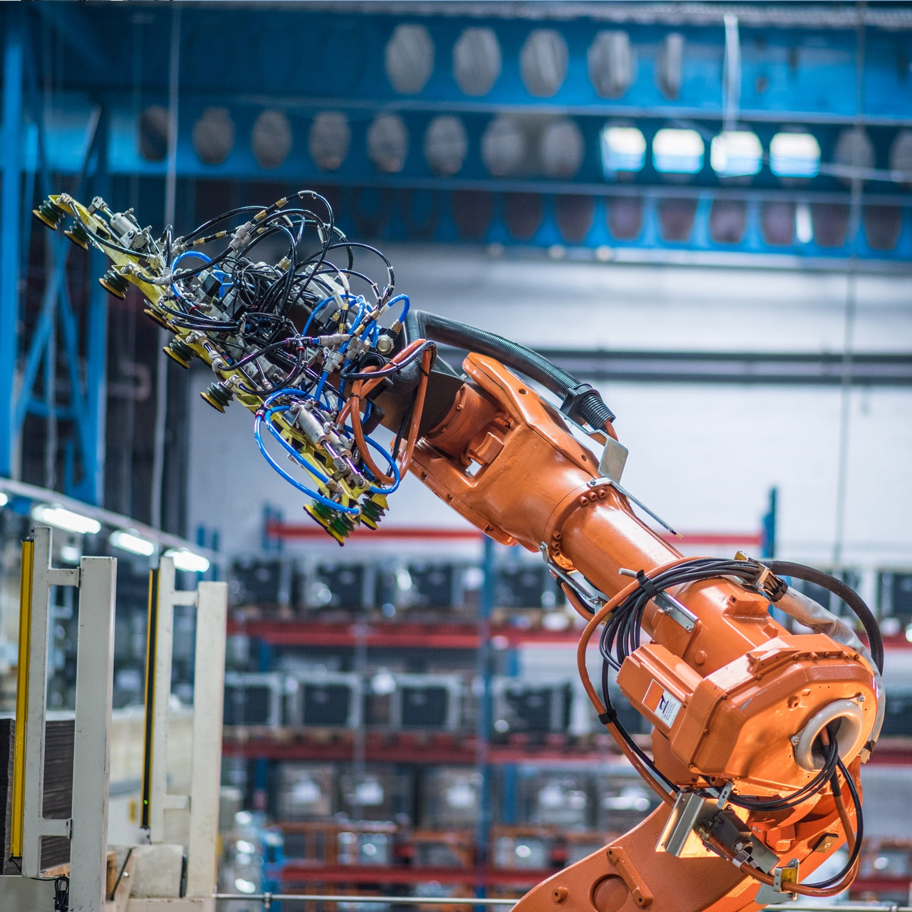
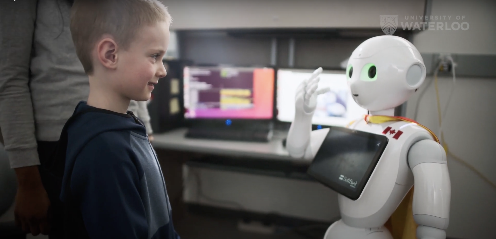
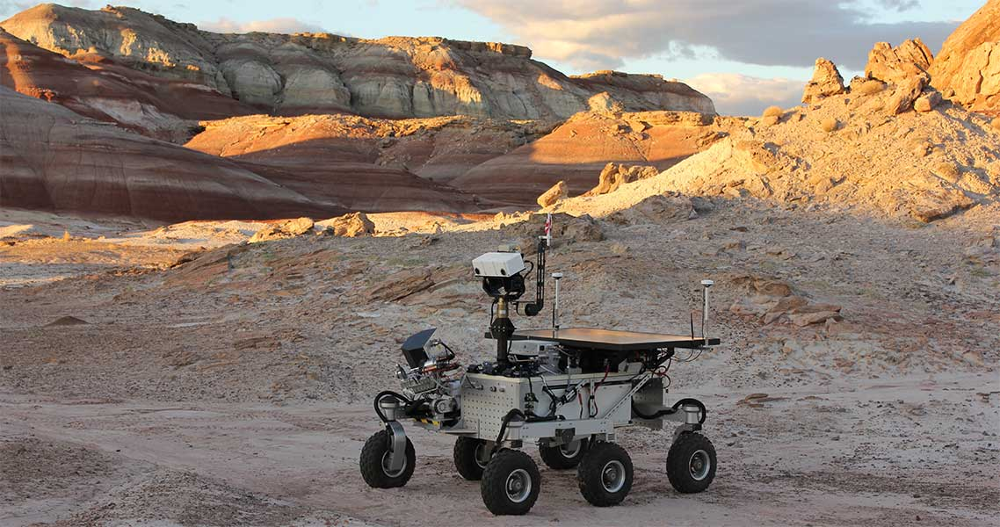

Revolutionizing Industries: The Power of Industrial Robots
In today's rapidly advancing world, industrial robots are at the forefront of innovation, transforming industries across the globe. These highly sophisticated machines are revolutionizing manufacturing processes, improving efficiency, and paving the way for a new era of productivity.
Industrial robots bring unmatched levels of efficiency and precision to manufacturing. Equipped with advanced sensors and sophisticated programming, these robots can perform repetitive tasks with unparalleled accuracy, reducing human error and improving overall quality. With their high-speed capabilities, they can significantly accelerate production cycles, leading to faster turnaround times and increased output. Whether it's assembling complex components or executing intricate welding operations, industrial robots excel in performing tasks that require meticulous attention to detail.
One of the most significant advantages of industrial robots is their ability to enhance workplace safety. By taking over hazardous or physically demanding tasks, robots minimize the risk of accidents and injuries to human workers. They can operate in environments that are too dangerous or toxic for humans, providing a shield of protection and ensuring a safer working environment. With enhanced safety measures and advanced collaborative features, robots are becoming invaluable assets on the factory floor.
Industrial robots offer unparalleled flexibility and adaptability. Their programming can be easily modified to accommodate changing production needs, allowing for quick reconfiguration and seamless integration into existing workflows. With the rise of artificial intelligence and machine learning, these robots can even learn from their interactions and adapt their behavior accordingly, optimizing efficiency and performance. This versatility empowers industries to respond swiftly to market demands and achieve operational agility.
Industrial robots are driving a paradigm shift in manufacturing by combining precision, efficiency, and adaptability. As these remarkable machines continue to evolve, they hold the potential to reshape industries, maximize productivity, and unlock new realms of innovation, heralding a brighter future for manufacturing processes worldwide.
Bridging the Gap: The Rise of Social Robots in Human Interaction
In recent years, social robots have emerged as fascinating companions that bridge the gap between humans and technology. These intelligent machines possess the ability to engage in meaningful interactions, provide companionship, and contribute to various aspects of our lives. Let's explore the transformative potential of social robots in shaping our social landscape.
Social robots are designed to simulate human-like behaviors, enabling them to engage in social interactions with individuals. From assisting the elderly and individuals with disabilities to serving as educational companions for children, these robots have shown remarkable potential in enhancing social well-being. By offering companionship, emotional support, and cognitive stimulation, they help address loneliness and isolation, particularly in vulnerable populations, promoting mental well-being and overall quality of life.
The therapeutic applications of social robots are gaining significant attention in healthcare and rehabilitation settings. These robots can provide personalized care, monitor patient vitals, and assist in physical therapy exercises. Additionally, they offer a non-judgmental presence for individuals with autism spectrum disorder, aiding in communication and social skill development. With their empathetic features and adaptability, social robots are poised to revolutionize the way we approach therapy and support in various healthcare contexts.
In educational settings, social robots serve as interactive learning companions, stimulating curiosity and engagement among students. They can adapt their teaching style to individual needs, providing personalized instruction and feedback. Through gamification and interactive storytelling, these robots make the learning process fun and engaging, fostering creativity and critical thinking skills.
As social robots continue to evolve, their impact on human interaction is becoming increasingly evident. By enhancing social interactions, facilitating therapeutic applications, and transforming education, these remarkable machines have the potential to reshape the way we engage with technology, opening doors to a more connected and inclusive society.
Expanding Horizons: The Advent of Exploration Robots
Exploration robots have become the vanguard of discovery, pushing the boundaries of human exploration beyond what was once imaginable. These technologically advanced machines are revolutionizing the way we explore uncharted territories, enabling us to unravel the mysteries of the universe and uncover hidden wonders on Earth.
Exploration robots are designed to venture into environments that are too dangerous or inaccessible for humans. From deep-sea exploration to space missions, these robots have enabled us to gather valuable data and insights from remote and extreme locations. Equipped with cutting-edge sensors, cameras, and analytical tools, they can capture high-resolution images, collect samples, and conduct experiments, providing scientists with unprecedented access to unexplored frontiers and aiding in the expansion of human knowledge.
Exploration robots are built to withstand extreme conditions and navigate challenging terrains. Whether it's exploring the depths of the ocean or traversing inhospitable landscapes, these robots demonstrate remarkable resilience and adaptability. They can endure high pressures, extreme temperatures, and hostile environments, making them ideal for missions that involve risk and uncertainty. By overcoming these obstacles, exploration robots pave the way for groundbreaking discoveries while minimizing human risk.
In space exploration, robots have played a pivotal role in gathering data from distant planets, asteroids, and moons. They have assisted in the search for signs of life, analyzed atmospheric conditions, and surveyed geological formations. With the advancements in robotics and artificial intelligence, these robots are becoming increasingly autonomous, enabling us to explore the vast cosmos and unravel the secrets of the universe.
Exploration robots are the pioneers of discovery, pushing the boundaries of exploration. Their ability to navigate challenging environments and gather critical information has revolutionized our understanding of the world around us. As technology continues to advance, these robots will undoubtedly play an increasingly significant role in shaping the future of exploration and expanding the limits of human knowledge.
